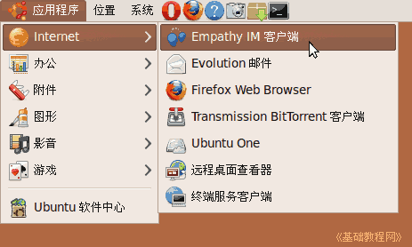

Ubuntu/GNOME 桌面程序指南
作者：TeliuTe 来源：基础教程网
六十八、Empathy IM 客户端 返回目录 下一课使用它，您可以登录各种即时信息聊天账号；
1、Empathy IM 客户端
1）点菜单“应用程序 - 互联网 - Empathy IM 客户端”，打开窗口；

2）首先会出来账号设置，点“前进”；
3）点击“账户类型”下拉列表，选择 Google Talk，输入用户名和密码，点“应用”，其他的可以后面再添加；
4）稍等会显示“在线”，目前里面还没好友联系人；
5）点“聊天 - 添加联系人”，可以添加好友的 gtalk 账号；
6）输入对方的ID，；
7）点“编辑 - 帐户”可以添加其他账号，使用gtalk还可以视频聊天；
本节学习了Empathy IM 客户端的基础知识，如果你成功地完成了练习，请继续学习下一课内容；
本教程由86团学校TeliuTe制作|著作权所有
基础教程网：http://teliute.org/
美丽的校园……
转载和引用本站内容，请保留版权信息和本站链接。